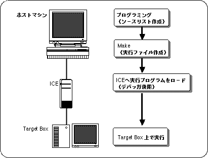
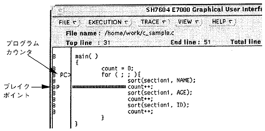

★SGL User's Manual
★PROGRAMMER'S TUTORIAL
★SGL User's Manual
★PROGRAMMER'S TUTORIAL
■ ｜進む▼
PROGRAMMER'S TUTORIAL
1.セガサターン・3Dゲーム・ライブラリについて
セガ・3Dゲーム・ライブラリー（略称：ＳＧＬ）は、セガサターン用ソフトウエア開発者のために提供される、３次元グラフィック制御が可能な関数群です。
ライブラリの各関数（特に演算ライブラリの各関数）は、サターンの処理能力を習熟したプログラマにより設計されたアルゴリズムなので高速な処理が可能です。
本章ではセガ・3Dゲーム・ライブラリーを使用したソフトウエア開発の手順と、ライブラリ使用時の注意事項を説明します。
1-1. プログラミング作業の流れ
- ＳＧＬを使ったセガサターン用ソフトウエアのプログラミング作業の流れは、
下図のようになっています。
図1-1 プログラミング作業の流れ

- ●ホストマシン
- プログラミング作業、コンパイル、デバッグ等を行います。
- ●Make
- コンパイル作業を含む実行形式ファイルの生成を行います。
- ●ICE
- セガサターンのメインCPUのSH2の動作をエミュレーションします。ICEに実行プログラムをロードすることで、作成したプログラムの動作を確認することができます。
- ●デバッガ
- プログラムのロード、実行、ソースレベルでのデバッグを行うことができます。
- ●ターゲットボックス
- ICEに接続することができ、セガサターンと同様の動作をします。
 |
ICEやデバッガの詳しい使い方に関してはそれぞれの説明書をご覧ください。 |
- HITACHI E7000 SH7604 エミュレータ
- SEGA SH7604 E7000 グラフィカルユーザインターフェースソフトウエア
|
ホストマシンの設定
- ホストマシンの環境設定には、以下の２点が必要です。これらの設定は、
“.cshrc”や“.tcshrc”
などのスクリプトに設定するか、自作のスクリプトに登録しておく必要があります。
- path 環境変数にデバッガのためのパスを追加します。
例
Set△path=($path/usr/local/lib/sh2/GUI)
△=スペース
- SHCのライブラリパス、デバッガのヘルプパス、ICEのアドレス、以上３つの環境変数を設定します。
図1-2 環境変数の設定
| ●環境変数● | |
| setenv SHC_LIB | ＜ライブラリパス＞ |
| setenv SH76GIHOST | ＜IPアドレス＞ |
| setenv HELPPATH | ＜ヘルプパス＞ |
ICEの設定
- ICEとホストマシンとの接続にはネットワークＩＤの設定やホストマシンの登録などのいくつかの初期設定が必要です。以下にこれを説明します。
- ●ICEとターミナルの接続
- ICEのフロッピーディスクを抜きます。
- ICE後部ディップスイッチのＳ８をＯＦＦにします。
ノートパソコン等とICEをRS-232Cで接続します。
（E7000側ではＣＲＴに接続すること）
- パソコン側でターミナルソフトを起動します。
|
Wtermを使用する場合の注意
諸設定がしてあれば［Control］＋［GRAPH］＋［S］キーを同時に押せばで接続完了です。
諸設定をしていなければICEとWtermの設定を合わせる必要があります。ICEの設定は 「ICEエミュレータユーザーズマニュアル」のＰ２９を参照してください |
- ●IPアドレス（ネットワーク上のID）の設定
- 接続が成功していれば下の様なメッセージが表示されます
- START ICE
- S:START ICE
- R:RELOAD&START ICE
- B:BACKUP FD
- F:FORMAT FD
- L:SET LAN PATAMETER
- T:START DIAGNOSTIC TEST
- (S/R/B/F/L/T)?
- メッセージが出力されたら“Ｌ”を入力すると、下の様なメッセージが表示されます。
- IP ADDRESS=X.X.X.X
- ここで設定したいアドレスを入力してください。例えば、
- IP ADDRESS=X.X.X.X.123.456.78.987
- 入力が終了したら電源を切ります。
- 以上でアドレスの設定は終わりです。
- ●ホストマシンの登録
- ネットワークを接続します。
- ICE後部ディップスイッチのＳ８をＯＮにします。
（後面に向かって右側に倒すとＯＮ）
- ICEの電源を入れます。
- ワークステーションで“telnet”コマンドを実行します。例えば、
- telnet 157.109.50.120 または telnet[ホスト名|IPアドレス]
- “(file name / return) ?”と表示されたら、リターンしてください。
- プロンプト“：”が表示されたら、以下のように入力してください。
登録されているワークステーション一覧が表示されます。
- LAN_HOST;S
("lh;s"と入力しても可。画面上には"llhh;;ss"と表示されます。)
- “PLEASE SELECT NO?”と表示されたら新規登録、または変更したい番号(01〜09)を選んでください。
- ホスト名（ICEをコントロールするワークステーション）を入力します。
- 例）
- 01 HOST NAME SUN214 ?SUNXXX
- SUNXXX=使用するホストマシンのホスト名
- ホストのIPアドレスを入力します。
- 01 IP ADDRESS ?157.109.50.47
- 157.109.50.47=使用するホストマシンのホスト名
- すべての入力が完了すると、次のメッセージが表示されます。
- PLEASE SELECT NO? . [RET]
- “ctrl”＋“］”キーを押し、“telnet”コマンドを終了させます。
- プロンプトが“telnet>”になるので、“quit”と入力して終了させます。
- ICEの電源を切ってください。
- ICEにフロッピーディスクを挿入し、再度ICEを起動します。
- 以上でICEの設定は完了です。
Makeファイルの設定・実行
- Makeは、“Makeファイル”と呼ばれる一連の手順や規則を記述したファイルに従って、UNIX シェルが実行するコマンド列を生成します。Makeはお互いに関連し合うファイル間の関係を効率よく制御することができるので、
例えば複数のソースファイルの内の一つだけを変更した場合に、全てのソースファイルを再コンパイルする手間を省くような機能を持っています。
ＳＧＬでは専用のMakeファイルを用意しています。Makeコマンドを実行することにより、このファイル中で指定されたソースプログラム群についてコンパイル等を行い、自動的に実行ファイルを生成します。
|
このMakeファイルは、ソースファイルと同一階層に置く必要があります。 |
- ユーザが新たにアプリケーションを作る場合などは、Makeファイルもそれに合わせて作りなおす必要があります。Makeの機能や書式等に関しては、市販の書籍等を参考にしてください。
参考書籍例：ｍａｋｅ（啓学出版／アンドリュー・オラム，スティーブ・タルボット著）
デバッガの起動・初期設定
- HITACHI E7000 ICEは専用のグラフィカルユーザインターフェース（GUI）を持ったソフトウエアで制御されます。このソフトウエアを本マニュアルでは“デバッガ”と呼びます。以下に、このデバッガの起動及び初期設定の方法を説明します
- 最初にICE、次にターゲットの電源を投入します（電源を切るときはこの逆の順番で切ります）。
- 自動化のためのファイルの作成
カレントディレクトリに“gish”、“PRESET”の２つのファイルを作成します。
- gish
- gish76△PRESET
- PRESET
- HOST△ホストマシン△ログイン名△パスワード
- RS
- G
- △=スペース
- これらのファイルの設定によって、以下の作業を自動化することができます。
- 「HOSTダイアログボックス」にHOST NAME, USER NAME, PASSWORDを設定する。
- ターゲットのリセットを行う
- gishはシェルスクリプトとして実行するためchmod△+x△gishコマンドにより実行権を設定しておきます。(△=スペース)
- デバッガの起動
ホストマシンで“gish”と入力しリターンするとデバッガが起動します。
起動の途中で以下のメッセージが出て入力待ちになったらウィンドウ内をクリックしてキー入力を有効にし、リターンしてください。
- (file name/return)?
- ターゲットがリセットされ初期画面が表示されたら“STOP”をクリックしてください。
- イニシャルプログラムのロード
“g 400”とタイプして、画面が消えたら“STOP”をクリックします。
- 開発用設定（割り込みの無効化）
【VIEW】メニューから“REGISTER”を選択し、「レジスタダイアログボックス」を表示させます。
ステータスレジスタ（SR）に“000000f0”を入力し、“ENTER”をクリックします。
|
この開発用設定はICEを使用するための設定です。実際にリリースするソフトウエアでは設定する必要はありません。 |
プログラムのロード・実行
- デバッガを使って実行プログラムをICEにロード、実行するための方法を解説します。
|
前項で説明した“PRESET”の様な初期化ファイルを使用しない場合は、【FILE】メニューの“HOST”を選択し「HOSTダイアログ」を開き、HOST NAME, USER NAME, PASSWORD を入力してください。
また、デバッガのコマンドエリアに“rs [return] g [return]”と入力し、ターゲットのリセットをおこなってください。 |
- 【FILE】メニューから［LOAD］→“PROGRAM FILE”を選択し、ファイル名をフルパスで入力します。
- “LOAD”をクリックします。
これで実行プログラムがロードされました。
|
USER の LOGIN SHELL にtcsh を使ってる場合、ホストマシンの /etc/shells ファイルに tcsh が登録されていないとFTP が動作できず、実行プログラムはロードされません。
詳しくは FTP に関する参考書籍等を見てください。 |
- 【EXECUTION】メニューから“GO”を選択します。
- 「GOダイアログボックス」で“START ADDRESS”の入力領域をクリックし、文字用カーソルを移動させ、同領域に“6004000”と入力します。次に、“START MODE”ボタンのプルダウンメニューから“order”を選択し、“Done”をクリックします。
- これで実行プログラムが動き始めます。
デバッグ
- ●ソースプログラムの表示
- 【VIEW】メニューから“SOURCE DISPLAY”を選択し、「SOURCE DISPLAYダイアログボックス」を表示させます。
- 表示させたいプログラム名をクリックして、反転表示させます。
|
マウスボタンをクリックする度に反転表示領域が広がります。パス名を含め、特定の行が反転できればＯＫです。 |
- “DISPLAY”をクリックします。
リースプログラムロード中や実行中に“DISPLAY”をクリックするとエラーになります。ロードの終了やSTOPにより、ICEのコマンド待ちになってからクリックしてください。
|
ダイアログボックスを消去したい場合は“CANCEL”をクリックしてください。 |
- ●トレース
- トレース機能により、ソースプログラムを1ステップづつトレースすることができます。
- プログラム実行後に、“STOP”をクリックした状態、または上記のソースプログラムが表示された状態で、下図のリストの部分の枠で囲まれた部分をダブルクリックします。その行頭が反転します。
図1-3 ソースプログラムからのトレース

- ここで“SET”をクリックします。
ブレークポイント［P］が設定されます。ただし、Ｂのついていない行には設定できません。
- 【EXECUTION】メニューから“GO”を選びます。
プログラムカウンタ［PC>］がブレークポイント［P］で停止します。
- ここから１ステップずつトレースするには下記の２通りの方法があります。
- STEP：サブルーチンに来た場合、サブルーチンのステップも１ステップづつトレース
- STEP_OVER：サブルーチンに来た場合、サブルーチンを１ステップとしてトレース
■ ｜進む▼
★SGL User's Manual
★PROGRAMMER'S TUTORIAL
Copyright SEGA ENTERPRISES, LTD., 1997